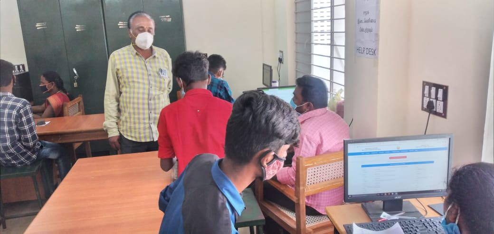
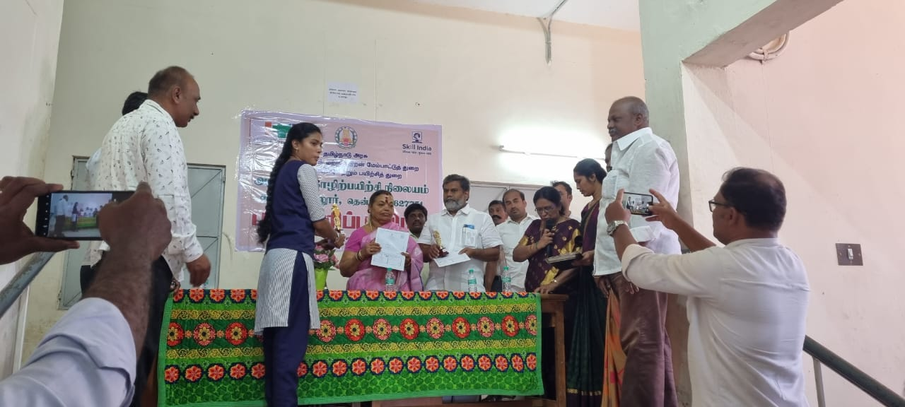

The following 5 trades are affiliated by Govt. of India, New Delhi through the Director General of Employment and Training, New Delhi.
This Govt.I.T.I achieved 85 % of result in All India Trade Test held in July 2022. At the end of Training, All India Trade Test is conducted and the NCVT Certificate to the passed out Trainees will be Issued.
ITI trade Electrician is powered by NCVT. ITI trade Electrician is a job oriented trade ITI trade Electrician is suitable for government job and private job. This ITI trade Electrician is very powerful for self-empowerment. This ITI trade Electrician is perfectly design to fulfill industrial requirement of Indian Industries as well as International industries.
ITI trade Fitter is powered by NCVT. ITI trade Fitter is a job oriented trade ITI trade Fitter is suitable for government job and private job. This ITI trade Fitter is very powerful for self-empowerment. This ITI trade Fitter is perfectly design to fulfill industrial requirement of Indian Industries as well as International industries.
Fitters have a wide scope of Employability ranging from self-employment, contractual employment to Industrial jobs. On successful completion of this course, the candidates shall be gainfully employed in the following industries:
ITI trade Mechanic (Motor Vehicle) is powered by NCVT. ITI trade Mechanic (Motor Vehicle) is a job oriented trade ITI trade Mechanic (Motor Vehicle) is suitable for government job and private job. This ITI trade Mechanic (Motor Vehicle) is very powerful for self-empowerment. This ITI trade Mechanic (Motor Vehicle) is perfectly design to fulfill industrial requirement of Indian Industries as well as International industries.
Installs, tests, maintains, repairs and replaces electrical Power distribution/power line equipments and fittings in factories, workshops, power house, business and residential premises etc. Manipulates controls to adjust and activate those equipments. Monitors and records control board/room readings, examines faults in control room and repairs substation equipments and panels to ensure proper operational efficiency. Mechanic Motor Vehicle (MMV) has a wide scope of Employability ranging from self-employment, contractual employment to Industrial jobs. On successful completion of this course, the candidates shall be gainfully employed in the industries for following occupations:
ITI trade Wireman is powered by NCVT. ITI trade Wireman is a job oriented trade ITI trade Wireman is suitable for government job and private job. This ITI trade Wireman is very powerful for self-empowerment. This ITI trade Wireman is perfectly design to fulfill industrial requirement of Indian Industries as well as International industries.
Wireman, Light and Power installs various kinds of electrical wiring such as cleat, conduit, casing, concealed etc. in houses, factories, workshops and other establishments for light and power supply. Studies diagram and plan of wiring and marks light, power and other points accordingly. Fixes wooden pegs, sizes tubes, saws casings, etc. by common carpentry fitting and other processes, according to type of wiring needed. Erects switch boards and fixes switch box casings cleats, conduits ceiling roses, switches, meters etc. according to type and plan of wiring. Draws wire in two way or three-way wiring system as prescribed and makes electrical connections through plugs and switches to different points exercising great care for safety and avoiding short circuit and earthing at any stage of wiring. Fixes fuses and covers as per diagram and insulates all naked wires at diversions and junctions to eliminate chances of short circuit and earthing. Fits light brackets, holders, shades, tube and mercury lights, fans etc, and makes electrical connection as necessary. Tests checks installed wiring for leakage and continuity using megger, removes faults if any and certifies wiring as correct for connecting mains. Checks existing wiring for defects and restores current supply by replacing defective switches, plug sockets, blown fuse etc. or removing short circuits and faulty wiring as necessary. May repair simple electrical domestic appliances.
Electrical wiring works such as cleat, conduit, casing, concealed etc. in houses, factories, workshops and other establishments for light and power supply.
ITI trade Welder is powered by NCVT. ITI trade Welder is a job oriented trade ITI trade Welder is suitable for government job and private job. This ITI trade Welder is very powerful for self-empowerment. This ITI trade Welder is perfectly design to fulfill industrial requirement of Indian Industries as well as International industries.
Gas welding (includes gas cutting), Arc welding, TIG welding, MIG/MAG welding etc

Govt. ITI., Kadayanallur
1/4 Panpozhi Road, Kasidharmam,
Kadayanallur,Tenkasi District.
Tamilnadu,India, Pin : 627 751
ITI courses are available which you can join even after the 8th or 10th.
Any degree students can also Join the ITI course.